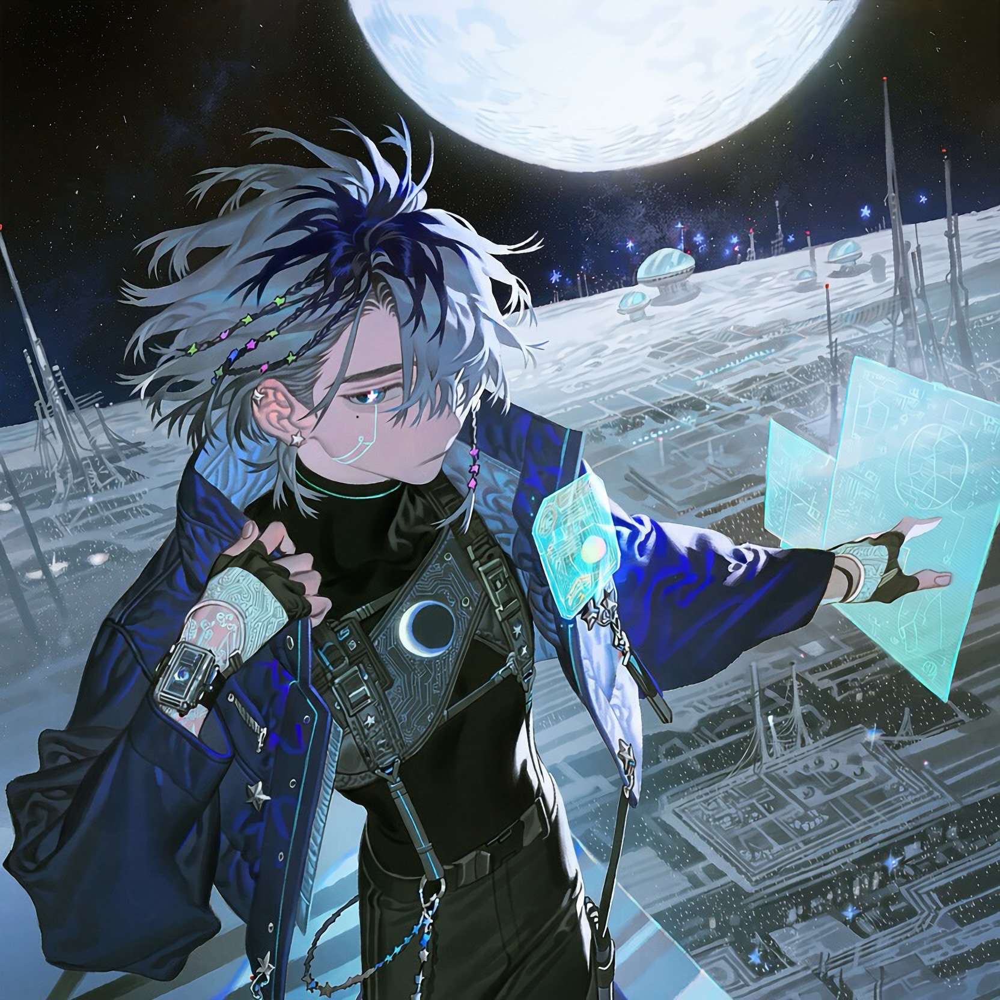

CHARACTER RECORD / 041STATUS: AVAILABLE

✦IMAGE
NOT FOUND
NOT FOUND
ゼニス
✦ WITH OUTFIT服装込み
PROMPT DATATXT / 041
masterpiece, best quality, ultra detailed, boy, adult male, human, slim androgynous build, pale skin, slightly tired eyes, narrow icy blue eyes, thin well-defined eyebrows, subtle dark circles, emotionless expression, small beauty mark beneath one eye, 1.4::short layered silver-blue hair with deep navy roots::, uneven fringe partially covering one eye, a few thin braided strands decorated with tiny metallic star beads, 1.4::glowing pixelated star-shaped pupils::, faint cyan circuitry tattoo running from temple to neck,
small silver ear piercings, futuristic cyberpunk hacker, 1.3::blue and midnight navy color palette::, oversized asymmetrical technical jacket, translucent blue outer panels, high black collar, cropped inner vest, fitted black turtleneck, luminous cyan seams, tiny star-shaped LED fasteners, moon-phase holographic display attached to the chest, layered utility harness, metallic buckles, fingerless gloves with holographic interfaces, one sleek cybernetic wrist device, slim black cargo trousers, asymmetrical thigh straps, translucent panels on one trouser leg, silver chain accessories, futuristic high-top boots, reflective synthetic fabrics, intricate microchip patterns, subtle celestial motifs, sleek urban techwear, understated futuristic fashion, highly detailed clothing construction,
PROMPT NOT ENTERED